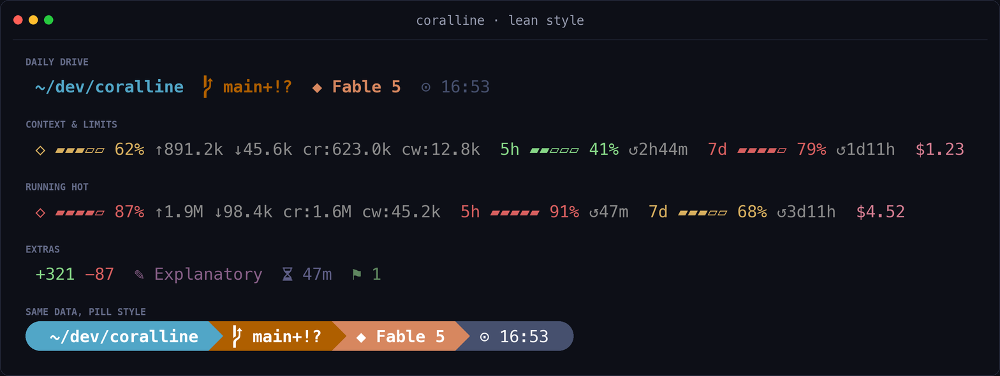
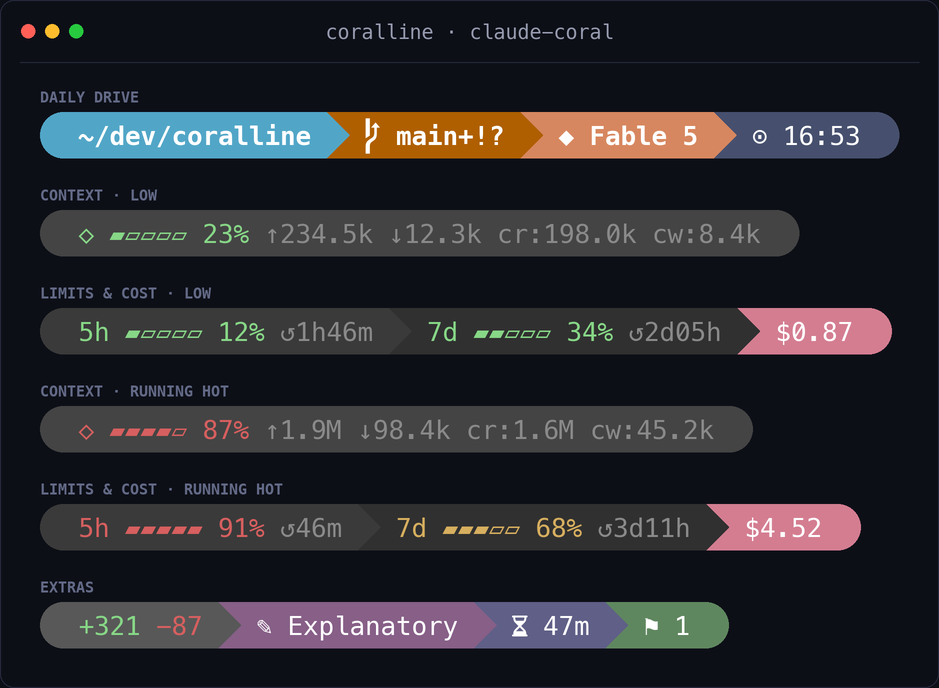
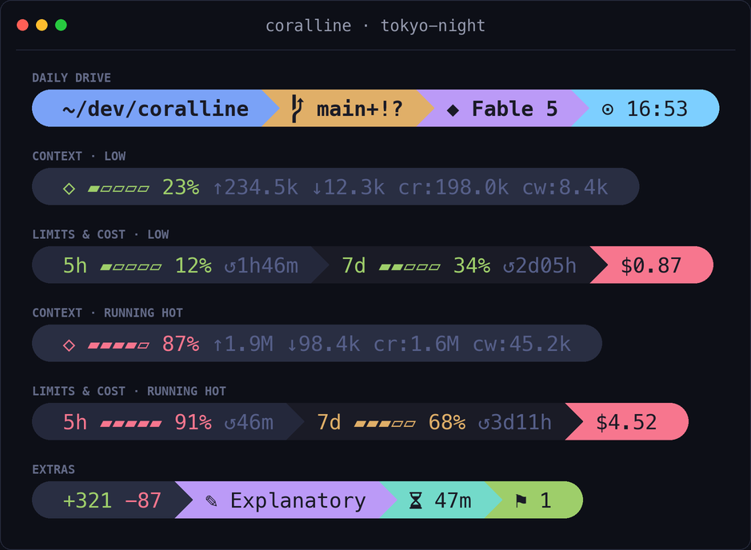
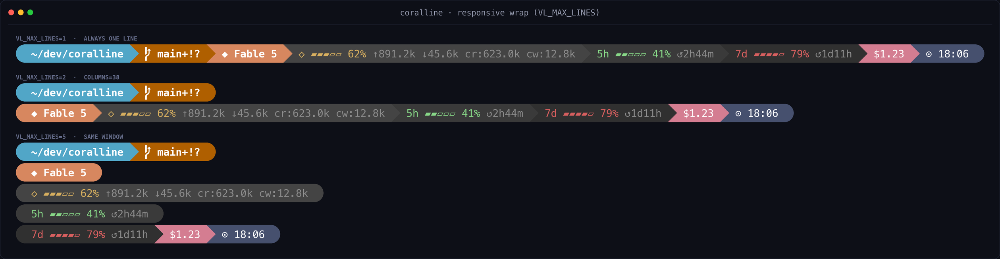

CLAUDE CODE · STATUSLINE · POWERLEVEL10K
github.com/Nanako0129/coralline
coralline
Powerlevel10k-inspired statusline for Claude Code
把 Claude Code 的工作状态做成一条可定制、可响应式、零网络调用、零 token 消耗的珊瑚状态线：目录、Git、模型、上下文窗口、5h/7d 限额、成本和时钟都在同一行。
282 StarsMITShell + Python6 ThemesrefreshInterval: 1Nerd Fonts
它最聪明的地方不是状态栏，而是“让 AI 采访你并安装”。
用户只需把 INSTALL playbook 丢给 Claude Code。Claude 会询问主题、pill/lean 风格、显示哪些 segments、单行/多行布局、12h/24h 与 Nerd Font，再写入 ~/.claude/settings.json 完成注册。
SEGMENTS
dir / project
路径折叠 + worktree 稳定 repo 名
长路径收束为 ~/a/…/z，project segment 在所有 worktree 里保持同名。
git
branch + dirty + ahead/behind
一次 git status --porcelain=v2 --branch 拉齐分支、改动、领先落后。
model / style
Fable 5 / output style
让当前模型与输出风格不用翻日志就能看见。
LIVE METERS
Gauge Threshold
green → yellow 50% → red 75%
上下文和限额接近危险区时，视觉上立刻变色。
PERFORMANCE
Zero Token
stdin JSON → shell output
Claude Code 把 session JSON pipe 给本地脚本；脚本不请求模型。
One jq
一次抽取所有字段
避免每个 segment 启一个子进程，适配每秒刷新。
Bash 3.2
macOS / Linux stock shell
不依赖 bc，配置文件也是 plain bash。
1
AI INSTALLER LOOP — 从一句 prompt 到可验证配置1
FETCH
让 Claude Code 读取 INSTALL.md playbook，而不是让用户手改 JSON。
2
INTERVIEW
选择主题、style、segments、layout、clock、Nerd Font。
3
WRITE
生成 coralline.conf，复制 statusline.sh 与 theme conf。
4
WIRE
更新 ~/.claude/settings.json 的 statusLine command。
5
VERIFY
用 sample input 跑真实脚本，确认输出可渲染。

Pill vs Lean：从 Powerline 胶囊到 p10k lean 纯文字强调

默认 claude-coral 主题

tokyo-night 深蓝霓虹主题
WHAT IT SHOWS
12 个状态片段
dir / project / git
目录、仓库名、分支、dirty 标记、ahead/behind。
model / ctx / limits
当前 Claude 模型、上下文窗口、5h 和 7d 限额重置倒计时。
cost / lines / duration
本次 session 成本、增删行、持续时间、stash、clock。
WHY IT IS FAST
零 token 的状态计算
本地 Bash 脚本
不打网络、不调用 API、不消耗任何模型 token。
单 jq + 单 git call
一次 JSON 抽取，一次 git status 取齐仓库状态。
每秒刷新
refreshInterval: 1，但没有逐字段 subprocess spam。
CONFIG SURFACE
一份 bash 配置控制外观
VL_STYLE / VL_LAYOUT
pill 或 lean；fixed 或 auto responsive。
VL_SEGMENTS*
控制每一行显示哪些片段，最多三行固定布局。
VL_BG_* / VL_FG_*
256 色或 RGB，自定义主题就是改 conf。
2
RESPONSIVE STATUSLINE — COLUMNS 驱动的窄屏折行
响应式 wrap demo：Claude Code v2.1.153+ 会把 COLUMNS 注入给 statusline
普通状态栏脚本
用户手动编辑 settings.json 和脚本路径，容易漏依赖。
每个字段单独调用命令，刷新频率高时 CPU 成本膨胀。
只显示 Git/路径，不理解 Claude Code 的 context、limits、cost。
coralline
AI playbook 先采访用户，再安装、写配置、验证输出。
session JSON 一次解析，Git 状态一次获取，零网络零 token。
把 Claude Code 的 context、limit、cost 做成一眼可读的 gauges。
// PASTE INTO CLAUDE CODE
# Fun install path：让 AI 读 playbook 并完成采访式安装 Please install coralline for me: fetch https://raw.githubusercontent.com/Nanako0129/coralline/main/INSTALL.md and follow the playbook in it. # Manual install path：本地脚本 + settings.json statusLine command git clone https://github.com/Nanako0129/coralline ~/.claude/coralline-src bash ~/.claude/coralline/statusline.sh